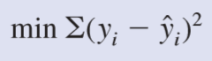

En esta sección encontrará un resumen de las principales usadas en este capítulo:
Fórmulas tomadas de Anderson David, Sweeney Dennis & Williams Thomas. 2008 “Estadística para Administración y Economía”, décima edición. Traducido por Ma. del Carmen Hano Roa; München: DE . Cengage Learning Editores.


